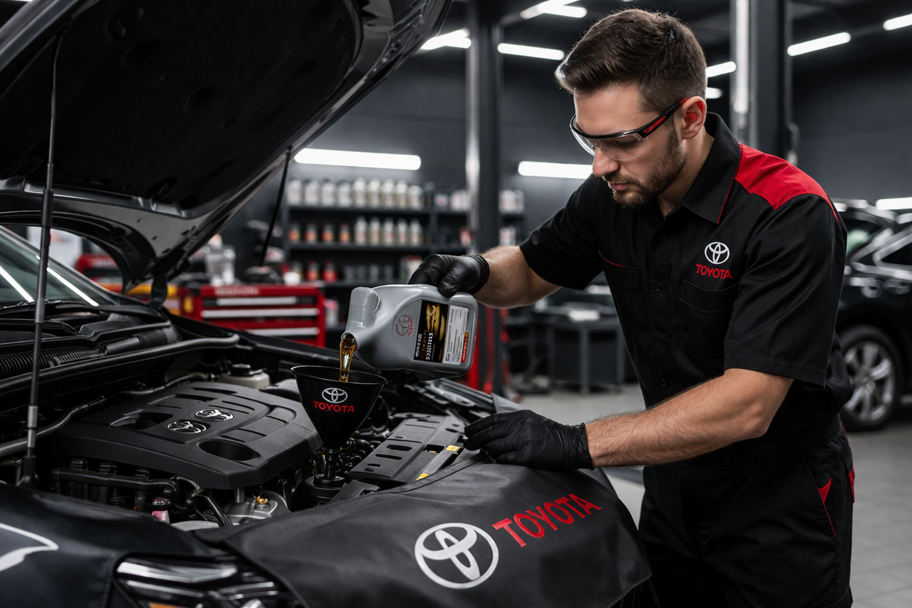

Быстрая и аккуратная замена моторного масла и фильтров для Toyota с подбором подходящих расходных материалов и контролем ключевых технических параметров.
Своевременная замена масла — основа долгой и стабильной работы двигателя. Мы подбираем масло по допускам производителя, меняем фильтры и проверяем состояние основных жидкостей, чтобы автомобиль оставался в отличной форме.

Среднее время замены масла — от 30 минут до 1 часа.
Стоимость зависит от объема двигателя, типа масла и выбранных расходников.